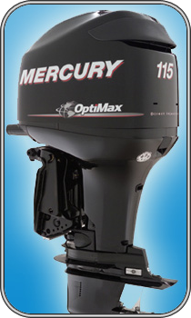

115 ELPT OptiMax

| Технические характеристики | |
|---|---|
| Максимальная мощность, л.с/кВт: | 115/84,5 |
| Максимальные обороты: | 5000-5750 |
| Число цилиндров: | 3 |
| Рабочий объём, см.куб: | 1526 |
| Диаметр Х ход поршня, мм: | 92 х 76 |
| Система впуска: | Двухступенчатый прямой впрыск топлива |
| Выхлопная система: | Через гребной винт |
| Охлаждение: | вода + термостат + регулятор давления |
| Зажигание: | На базе блока РСМ 038 |
| Запуск: | Электрический |
| Ток генератора/мощность: | 60/756 |
| Передаточное отношение: | 2,07:1 |
| Система смазки: | Электронный многоточечный впрыск |
| Система управления: | Дистанционная |
| Передачи: | Передняя-нейтраль-задняя |
| Регулировка дифферента: | Электрогидровлическая |
| Длина приводного вала, мм: | 508 |
| Системы предупреждения: | Перегрев двигателя, давление воды, низкий уровень масла, состояние маслонасоса. |
| Топливный бак, л: | выборочный |
| Сухой вес, кг: | 173 |
| Система SmartCraft: | Опция |
| Гарантия: | 3 года |